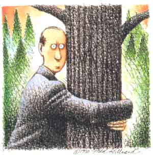

WHEN I visited him at the Massachusetts Home for the Ecologically Bewildered, the Pilgrim was but a shadow of his former self. His symptoms, including self-flagellation and compulsive hand-washing, were remarkably similar to those exhibited in Puritan days by sufferers of "scruples," a mental illness among fallen religious fanatics who, for one reason or another, had become disillusioned with their faith and disgusted by the omnipresence of sin, including their own. But when the Pilgrim began to mutter such organic-sounding phrases as "I have fouled my nest!" the staff concluded that he was yet another victim of the new but increasingly common Environmental Awareness Disorder (EAD). Its precise causes were still unknown, an intern admitted. But over the last two decades it had struck a growing number of Americans (plus a smattering of Japanese and West Germans), threatening to become the disease of the future.
Indeed, when the Pilgrim began to relate his story in a bedside interview, he dated the onset of his troubles to April 22, 1970, when, young and idealistic, he had zealously embraced environmentalism and the message of our nation's first Earth Day. And that double-edged message stressed, he recalled, that while we were rapidly destroying our planet's environment, we were also fully capable of reversing the process if we but pulled together, each of us doing our share to modify our own extravagant lifestyle.
On the advice of innumerable, well-meaning handbooks like 500 Things YOU Can Do to Save the Environment, the Pilgrim immediately but modestly set out to change his ways. To fight proliferation of nuclear power he began turning off light switches. To conserve water he placed bricks in the flush tank of his toilet. To battle sheep ranchers who were shooting bald eagles he boycotted lamb. To halt the destruction of spruce forests he ceased subscribing to certain bulky newspapers.
But nothing happened. To his amazement, a year or so later, the environment had not improved one iota. It was then it occurred to him that while he had dutifully been saving the nation's fuel and preventing pollution by busing to work, turning down his thermostat, and taking four-minute showers, his next-door neighbor had far more than undone these efforts by installing a sauna, putting a three-room extension on the house, buying a Buick for his teenager, and a snowmobile for his six-year-old.
It was a terrible shock, the Pilgrim said, to learn that an individual could not make a difference. And had that suggestion not come from the environmental movement itself, he would now suspect it as bait put forth by the opposition-an opiate for the environmentally faithful masses.
But it was even more disillusioning to learn that there were no such masses, just a handful like himself who religiously shouldered their full measure of guilt and responsibility. Clearly, environmental sin was everywhere: It lay heavy upon corporate heads and conservative politicians, as well as upon the general congregation. But equally clear, 95 out of 100 Americans did not believe or care that they personally were committing it, and they were not about to repent unless bludgeoned into it.
How might he best bring about the desperately needed environmental reform? he asked himself. He toyed with the proven-effective New England custom of "burning at the stake" for the most nonpenitent sinners. But he discarded that: Not only would it take precious firewood, but it would be seen as "inconsistent" due to the quantities of CO2 and hydrocarbons released into the atmosphere.
But with that political turn of mind, he suddenly realized that his destiny lay as a clean-air lobbyist in Washington, D.C., focusing upon that most energy-consuming and polluting of all American creations: the private automobile. By working quietly to create new environmental law, the Pilgrim reasoned, he could attack the problem at its source. He could save the lungs and souls of American consumers, even those of auto industry executives, without their ever noticing.
And the Pilgrim and his cohorts did achieve success, namely in the Clean Air Act, which compelled carmakers to produce cars that ran on fewer and fewer gallons of gas. The nation in general and the Pilgrim in particular felt optimistic, because with a steadily rising standard of fuel efficiency for new cars, it seemed certain that guilt borne on future American shoulders would decline in direct proportion.
Indeed, gasoline mileage for the average American automobile rose from roughly 13 miles per gallon in 1970 to 18 miles per gallon in 1989- a 50% improvement. But no net savings were made in either gasoline consumed or pollution emitted, because Americans bought almost precisely enough more cars, and drove them enough more miles per person per year, to wipe out all gains in fuel efficiency. As an added perversity, the Pilgrim noticed, national revulsion at the notion of carpooling created increased auto congestion, and thus stop-and-go driving, on virtually all major U.S. commuter routes, which meant that the newer, more efficient cars were never driven very efficiently.
Disheartened, he packed his bags. If he could not save the body and soul of the nation, he could at least devote his waning days to salvaging his own by leading a life of environmental purity. Long ago he had, of course, given away his own auto, eschewed aerosols and other ozone depleters, and become a vegetarian. Indeed, he had even discarded his first and only lover, Grace, for glancing at a sealskin coat in a furrier's window.
But the very day he began his quest for perfection, he was overwhelmed by the volume of ecological decision-making he was compelled to perform. Consider, for example, the seemingly simple question he'd faced on whether to eat a supermarket apple: Had it been sprayed with daminozide? Had it perhaps been fertilized with the chemical 5-10-10, which, while it would most likely not harm him, might well be poisoning the water and subsoil of some distant river valley? Was he willing to spend twice as much for a perfectly organic and environmentally moral apple? And, if so, how could he be assured it would not have a worm in its center? Today, the complexity of it all made the same consumer's dilemma faced in the Garden of Eden seem like small potatoes.
He did not fail to worry, either, about what might happen if he bit the organic apple's worm in half. He was well aware that in the two decades since Earth Day I, a large number of fervent, specialized animals' rights sects had sprung up under the umbrella of-even in the name of-environmentalism. Some opposed the use of laboratory animals and the use of animal by-products even in the treatment and cure of human diseases. Would he be less than perfectly pure-as some of these sectarians would surely say-would he be denied his place in the environmental Hereafter, if he inadvertently ate a worm?
In this anguish and confusion, in this vein, he thought of (lovely and amazing) Grace. For he had learned only recently that the fur she had glanced at, and for which he had rejected her those many years ago, was not, as he had then supposed, from an endangered species. Had he somehow made an error? He wrote her. Yes, she replied by postcard, she well remembered him and the incident. For a time she had been heartbroken by his rejection. But in reaction she'd married the first Styrofoam salesman she could find, had had nine children by him, and had bought each one of them a noisy, polluting, off-road vehicle.
It was this, the Pilgrim confided, that finally put him over the precipice and into the Massachusetts home. He realized now that as a human being there was no foolproof way of achieving environmental salvation. He was still trying, in a way. But even here in the ecologically near-perfect home, ingesting only sips of water and tiny amounts of oat bran and liquefied kelp, he had still to live with the undeniable fact that he moment-to-moment exhaled carbon dioxide, contributing to the greenhouse effect.
He shook his head. "There seems nowhere to turn," he said.
"Then what will you do?" this reporter finally asked.
The pilgrim sighed. "I shall pray," he said.
|
 |
|
|